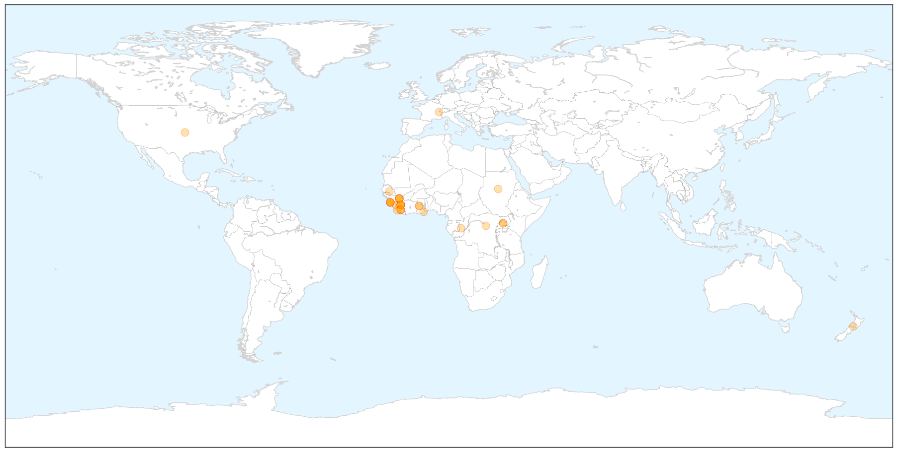

Toggle navigation
Early Warning
Return to Dashboard
Points of Interest
About the Project
Ebola
Apr 08, 2014
Compare to:
-
Dengue Fever
Hemmorhagic Fever
Mold/Fungal Infection
Influenza
Meningitis
Pertussis / Whooping Cough
Middle East Respiratory Syndrome
Cholera
Hepatitis
Chikungunya
Yellow Fever
Bubonic Plague
West Nile Virus
Swine Flu
Measles
Unknown
Mumps
30 Day Trends
Web: 19
alerts
, 0
warnings
Twitter: 6
alerts
, 0
warnings
Top Articles:
1.000
Ebola could spread for months
1.000
Ebola outbreak most challenging ever seen by WHO
1.000
Ebola virus kills more than 100 West Africans
1.000
West Africa Ebola outbreak among 'most challenging' ever WHO
1.000
DEADLY EBOLA VIRUS WITH NO KNOWN CURE IS SPREADING
1.000
Ebola Outbreak: WHO warns against restriction on trade activities in W/Africa
1.000
Ebola outbreak is among most challenging, could last months: WHO
1.000
Ebola outbreak in West Africa could last months, officials say
1.000
Officials say Ebola outbreak in West Africa is among most challenging, could last months
1.000
Test results from suspected Ghana Ebola case comes out negative
1.000
iafrica.com SA not testing for Ebola
1.000
iafrica.com Guinea Ebola death toll at 95
1.000
West Africa Ebola outbreak among 'most challenging' ever
1.000
Senegal has 'well-oiled system' to stop Ebola
0.999
West Africa Ebola outbreak among `most challenging` ever: WHO
0.999
Guinea's first Ebola survivors return to family, stigma remains
0.999
Ebola Virus Outbreak In West Africa Expected To Last 2 To 4 More Months, WHO Announced
0.999
Guinea's first Ebola survivors return home but stigma remains
0.999
Guinea's first Ebola survivors return to family, stigma remains
0.998
The African Ebola outbreak that keeps getting worse
0.998
Success Achieved but Challenges Remain
0.998
Ebola Outbreak Expected for Another 2-4 Months
0.998
Ebola virus: Ghana shouldn’t close its borders
0.998
Guinea Ebola patients discharged
0.998
Guinea's first Ebola survivors return to family, stigma remains
0.994
Guinea death toll stands at 95
0.994
Ebola outbreak among 'most challenging'
0.992
WHO says West African Ebola outbreak to last 2-4 months
0.960
Successes and challenges in response to Guinea Ebola epidemic
0.954
Ebola Outbreak Creates Political Controversy in Liberia
0.946
Ebola still spreading, WHO expects outbreak to last 2-4 months
Top Tweets:
No tweets found for Apr 08, 2014
Web/News Articles
X
Tweets
X
Article Locations
X

Article Confidences
X